WCAG Luminosity Contrast Ratio Analyser
Options page
Magnify Look

(no magnifier)
Show glass on a map-like background
Grid Size:
Toolbar
Color-value panel visible
Show text sample
Directions:
Automatically copy last picked color to clipboard.
Use
left-click
for background,
right-click
for foreground.